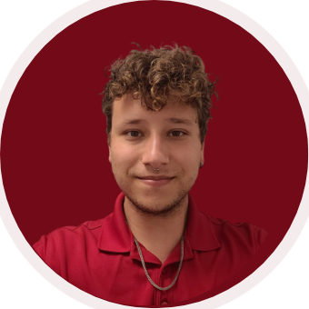

<!DOCTYPE html>
<html lang="en">
<head>
    <meta charset="UTF-8">
    <title>BrunoBsv Portfolio/title>
</head>
<body>
    <h1>Bruno de Souza Viana</h1>
    
    <h2>Summary</h2>
        <p>I am a future Front End Develper who are contantly looking for grow and improve my knologes about the world and about IT too.</p>
        <p>Singer, pizzamaker, ex military and ex seller, i had learned important lessions about how to work and how to be in different workplaces.</p>
    <hr />
    <h2>Education</h2>
    <h4>Universidade Católica de Brasília 2021-2023</h4>                      
        <ul>
           <li>Bachelor of Science, System Analysis & Development</li>
        </ul>
    <hr />
    <h2>Work Experience</h2>
    <ul>
        <li>
            <h4>Brazilian Airforce - Brasilia, Brazil</h4>
            <h5>Second Class Soldier - 2015 - 2016</h5>
            <ul>
                <li>During recruitment and training period I learned the necessary skills to perform my duties as a soldier of the air force.
                After, I worked in the command secretariat area as manager of technological programs.
                I created maintained the BINFAE website where I shared events, news, and relevant information with fellow soldiers.
                I worked as a photographer, as a graphic designer to construct creative content, a video editor and IT technician for the battalion.
                </li>
            </ul>
        </li>
        <li>
            <h4>Selfed Employed - Brasilia, Brazil</h4>
            <h5>Computer Technician - 2016 - 2018</h5>
            <ul>
                <li>As a contractor I provided support, maintenance, and establishment of basic networks.
                    Acting autonomously at various corporate events, I had the role of formatting, configuring, installing and supporting software. 
                    I utilized network cables and configured new networks for specific events.
                </li>
            </ul>
        </li>
        <li>
            <h4>Trinno Technology - Brasilia, Brazil</h4>
            <h5>E-Commerce/Video Editor/Computer Technician - 2018 - 2021</h5>
            <ul>
                <li>As a professional I utilized my expertise to provides technical assistance for the following areas:
                     Video Editing, Technical Support, E-commerce Management, Support for cloud backups, Systems support, among other experiences already requested in the role.
                </li>
            </ul>
        </li>
        <li>
            <h4>Virgin Voyages - At the Seas</h4>
            <h5>Pool Service Attendant - 2022 - Now</h5>
            <ul>
                <li>I maintain the public areas surrounding the aquatic centers. 
                    I ensure the organizational standards set by the company are met to create a positive experience for sailors. 
                    I proactively engage with guests to meet their standards by providing towels at their leisure. 
                    When weather does not permit, I perform the proper procedures to maintain the quality of pool service.
                </li>
            </ul>
        </li>
    </ul>
    <hr />
    <h2>Skills</h2>
    <h4>1 - 5 Stars</h4>
        <ul>
            <li>Adobe Creative Suite &#11088 &#11088 &#11088</li>
            <li>Web Development (Html, Css, Javascript) &#11088 &#11088</li>
            <li>Maintenance of basic networks and devices &#11088 &#11088 &#11088 </li>
        </ul>
    <hr />
    <h2>Awards and Certificacions</h2>
    <ul>
        <li>
            <h3>Escola Saga - Brasilia, Brazil</h3>
            <h4>Curso Start - 2012 - 2015</h4>
            <ul>
                <li>Start 5.0 SAGA is a complete and generalist training that takes you to the practical study of the most used software on the market, with the objective of improving your skills to build a portfolio and direct you to a career in the desired area. 
                    Learn vector illustration, digital painting, image composition, visual effects, editing and motion graphics for videos, as well as creating interactive 3D projects for virtual and augmented realities.
                </li>
            </ul>
        </li>
    </ul>
    <hr />
    <h2>More About Me :) </h2>
    <ul>
        <li><a href="./public/hobbies.html">&#127947 Hobbies</a></li>
        <li><a href="./public/contact.html"> &#9993 My Conttacts</a></li>
    </ul>
    <footer>
        <p><small>© 2023 BrunoBsViana</small></p>
    </footer>


    

</body>
</html>